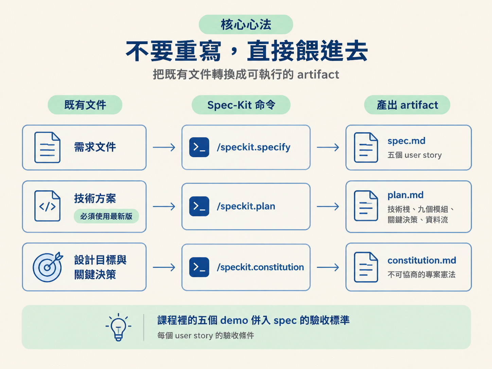
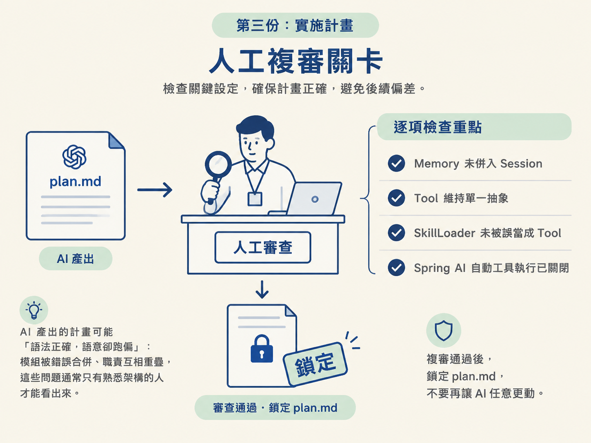

開始實作前，最容易犯的錯不是少寫一段程式，而是讓 AI 根據過時或含糊的文件自由發揮。OryxOS 已經有需求文件與技術方案，這一階段的任務不是再想一套新設計，而是把既有內容整理成 AI 能依循、也能被人複審的三份 artifact：constitution.md、spec.md 與 plan.md。
完成本階段後，你應該能說明需求文件、技術方案與設計目標，分別要交給哪個 Spec-Kit 命令；也能判斷三份 artifact 各自負責什麼，以及它們應該長成什麼樣子。
OryxOS 的需求文件與技術方案早已存在。Spec-Kit 在這裡扮演的是轉換器，不是重新發想產品的設計師。每份既有文件都有對應的命令與產出：
| 既有文件 | 餵給哪個命令 | 產出 artifact |
|---|---|---|
| 需求文件 | /speckit.specify | spec.md：五個 user story |
| 技術方案 | /speckit.plan | plan.md：技術棧、九個模組、關鍵決策、資料流 |
| 設計目標與關鍵決策 | /speckit.constitution | constitution.md：不可協商的專案憲法 |
| 課程裡的五個 demo | 併入 spec 的驗收標準 | 每個 user story 的驗收條件 |

這個流程有一個不能妥協的前提：一定要餵最新版的技術方案。如果文件版本不對，plan.md 可能會依照錯誤的模組數拆解。例如，舊方案若有十一個模組，最新版卻已經收斂成九個模組，AI 依舊版產出的計畫就會從根基開始歪掉，後面幾乎得全部重來。
環境準備有兩件事：用 uv 安裝 specify CLI，並設定 Claude Code 作為主要 AI agent。specify CLI 需要 Python 3.11 以上。
完成初始化後，工作區會生成 .specify/ 目錄，以及 .specify/memory/constitution.md 等占位檔。這裡不展開安裝指令，直接依照官方文件操作即可；Spec-Kit 版本迭代很快，實際指令可能會變動。
constitution 是整個專案的行為約束，不是一般的設計說明文件。它主要寫給 AI agent：到了 implement 階段，agent 會主動引用這些原則，遇到違反原則的方案時，就應該把問題擋下來。
OryxOS 的憲法會把關鍵決策固定成大約六到七條非協商原則，主要包括：
SKILL.md 加 MCP）、輕碼（自寫 MCP server）、重碼（@Tool）三種方式都要支援，且優先採用零碼。MEMORY.md 進行關鍵字檢索；向量檢索延後。其中有兩條特別容易被漏掉。第一，Spring AI 只使用一半：只拿它做協定轉換與 @Tool schema，並關掉它的自動工具執行。第二，審計表從第一天就開始寫，不能等功能做完才補。
憲法寫定後，AI agent 不能單方面修改。如果某一條原則真的有問題，應該先停下來，和人一起討論是否修改，而不是讓 agent 在實作途中自行改規則。
把需求文件餵給 /speckit.specify，產出 spec.md。這份文件會描述五個 user story，也就是從使用者角度定義要完成的五項能力。
這裡有兩個容易搞錯的地方：
驗收標準可以直接沿用課程裡的五個 demo。每個 demo 都應該對應到一個 user story，讓「完成」有可觀察的結果，而不是只停留在文件描述。
/speckit.clarify 是可選命令，但很值得執行。它會逼你回答 spec 裡的模糊處，像是把一張有鉛筆痕跡的地圖描清楚，減少進入 plan 階段後才發現方向不明、必須返工的機會。
接著把技術方案、spec 與 constitution 一起餵給 /speckit.plan，產出 plan.md。這份計畫要說清楚：
計畫生成後一定要人工複審，而且要逐項確認以下幾件事：
複審通過後，鎖定 plan.md，不要再讓 AI 任意更動。AI 產出的計畫可能「語法正確，語意卻跑偏」：模組被錯誤合併、職責互相重疊，這些問題通常只有熟悉架構的人才能看出來。

複審不是簽名走流程。它是在確認 AI 是否真的理解架構，而不是只把文件中的名詞重新排列一次。
完成這一步後，repo 裡應該具備：
.specify/memory/constitution.mdspec.mdplan.md到這裡，五個 user story 已經有需求、架構與約束作為實作依據。接下來不是再猜「要做什麼」，而是可以按照鎖定後的 plan，開始做出第一個真的能跑起來的 demo。